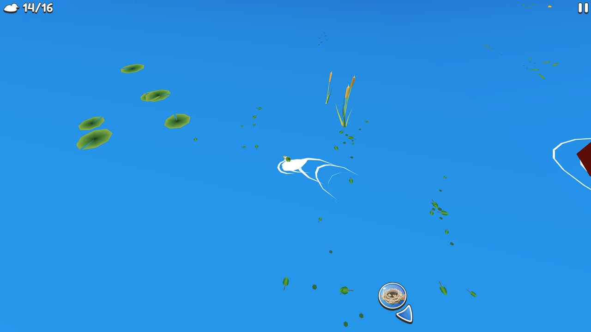
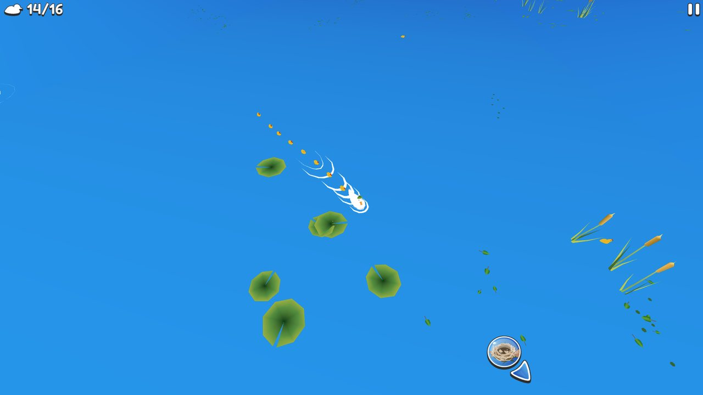
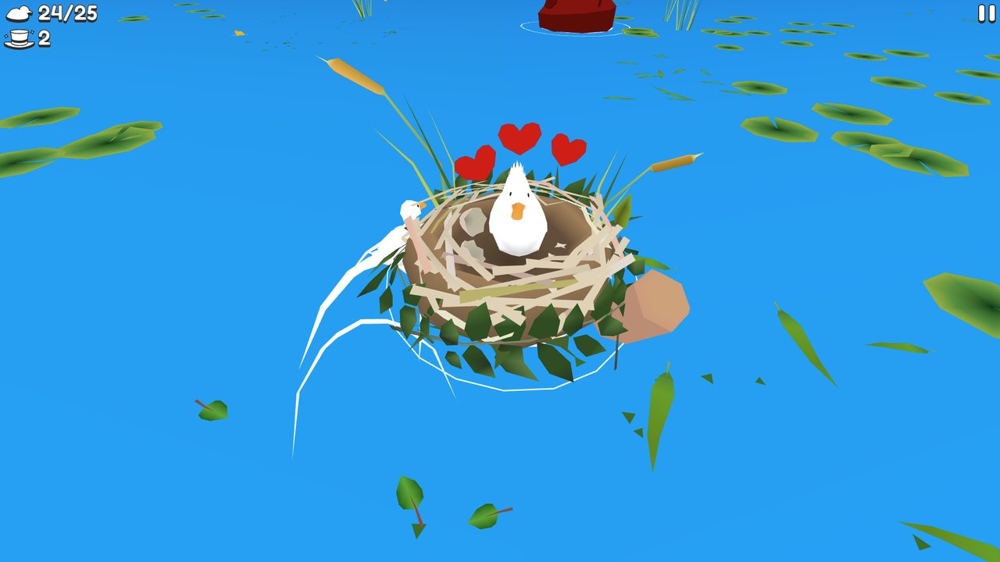
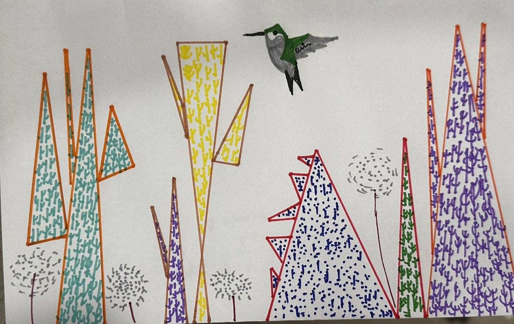
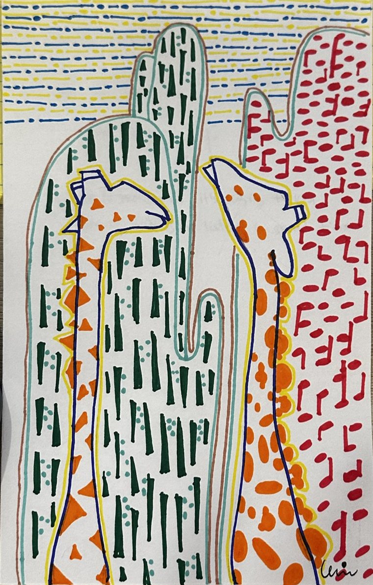
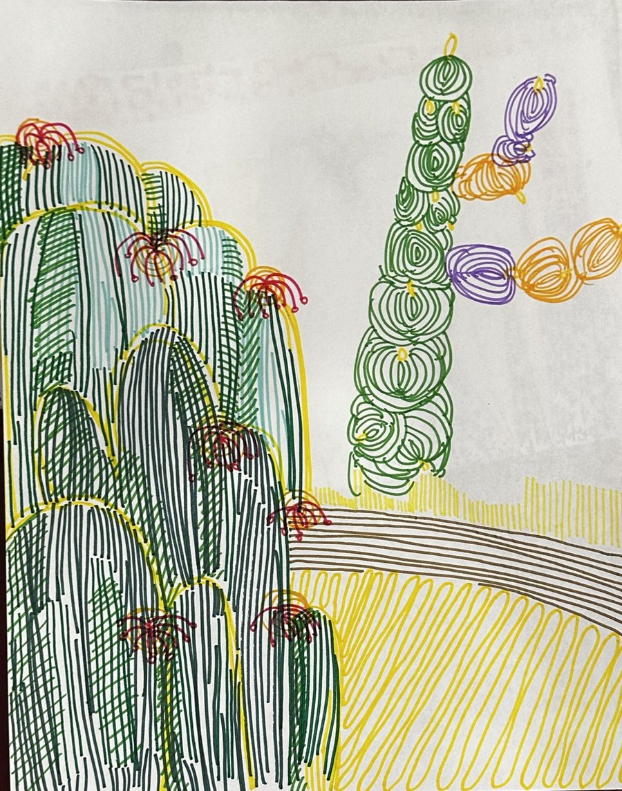

You are a quiet listener at the edge of a desert. A saguaro seed sleeps in the sand. Sounds drift by as glowing bubbles, each holding a musical note and a small desert creature: a woodpecker, a hawk or a tiny owl in its nest hole. Listen, then collect. The saguaro drinks them and grows.
But the desert hallucinates. Some sounds come from nowhere: heat-haze echoes that only sound real. Collect one and it dissolves, leaving a ghost arm that fades. Nothing is lost — you just learn to listen more carefully.
Turn sound on, then hover an orb to listen.请先开启声音，然后将鼠标移到气泡上聆听。Activa el sonido y pasa el cursor sobre una burbuja para escuchar.
Mirages shimmer at the edges and sound a little too clean.幻影的边缘会闪烁，听起来有点“太干净”。Los espejismos titilan en los bordes y suenan un poco demasiado limpios.
Prototype of the core loop only — final pacing, art and sound come in Week 2. While you are away, the real game keeps the saguaro drinking slowly (idle growth).
02Research · case study
Playing Ducklings, and finding who made it.
I chose one browser game I could actually play, then separated what the creators say, what I observed, and what I think it means.
Why Ducklings caught my attention
The illustration and music felt relaxing, and the loop is a small idle-style growth cycle: rescue ducklings, bring them home, upgrade the nest. That is close to what I want — a thing that grows because of what the player gathers. But I felt a little dizzy while playing because the duck and camera move around too fast.
What I want to learn
How a “collect and grow” loop stays calm, and which choices (music, camera speed, threat) make a relaxing game stop being relaxing.
Creator statementMy observationMy interpretationLabels used throughout this page.
Creator credits & source links
Game
Ducklings (2019)
Developers
Jesper van den Ende & Jurgen Hoogeboom — Pelican Party Studios, Rotterdam Creator statement · studio page
Released by the studio as the album “Ducklings” (one 10:36 track, 20 Sept 2019), described as calm background music. Bandcamp. No individual composer is named there.

Screenshot not found
Moment 1 · the first swim: lone duck, lily pads, cattails

Screenshot not found
Moment 2 · ducklings trail behind the duck

Screenshot not found
Moment 3 · the nest: hearts, a hat counter, closer camera
Three meaningful moments
The first swim
I saw / heard
A flat, bright blue pond seen from above: low-poly lily pads, cattails, one white duck leaving a white ripple. A counter (14/16) top left, a pause button top right, a red boat entering at the edge.
I did
Steered the duck with the cursor.
What changed
A nest icon with a blue arrow sat at the screen edge, pointing home. The scene moved fast and I felt a little dizzy.
I understood
The interface is almost empty, so the world and one arrow do the guiding. Pace matters as much as the art.
Ducklings follow
I saw / heard
A line of tiny yellow ducklings strung behind the duck, with a splashing wake. More lone ducklings float near the reeds.
I did
Swam into lost ducklings.
What changed
Each one joined the trail.
I understood
Progress is visible in the world, not in a menu: you literally carry what you collected.
The nest
I saw / heard
A close, warm view of a leafy nest with a white duck, three red hearts, and a new hat counter (2) under the 24/25 count.
I did
Brought the ducklings home.
What changed
The camera moved in, the count rose from 14/16 to 24/25, and a reward counter appeared.
I understood
Returning home pays off with affection and decoration. I read the counts as ducklings gathered against a target, but that is my interpretation. Interpretation
Five player-action events
#
Player action
Game response
Player understanding
Evidence
1
Moves the cursor
The duck swims toward it, leaving a white wake; the camera follows. A nest arrow points home
The cursor steers; movement is the main verb
Observation
2
Swims into a lone duckling
It joins a line behind the duck
Rescuing = collecting
CreatorObs.
3
Brings ducklings back to the nest
Camera moves in; hearts appear; counts rise and a hat counter shows
Progress is spent on a permanent, decorated home
CreatorObs.
4
Drifts near a boat
The duck gets hurt and the game ends: game over (red boats appear at the screen edge)
Boats are the threat; the pond is not purely safe
CreatorObs.
5
Meets another duck with ducklings
Ducklings can be taken by other ducks (it happened in my play; other players report it too)
The pond is shared and competitive
ObservationInterpretation
The reference library I researched
Each credited to its creators, linked to its source, with what it teaches me. Ducklings is the main case study; the others shape the concept.
Browser · visual novel
Letting Go
little-moon-games · made with Godot · tagged cozy, relaxing
Sort a childhood bedroom and choose what to keep. In the author’s replies, she says it grew out of her own struggle with keeping things, and that she might revisit it with more nuance.
Teaches me: a clear to-do list makes the layout easy; tactile physics feels good; check contrast. Its idea of bringing a recorder to collect sounds in nature inspired my orbs.
Download · platformer
Saguaro (Aztec Game Lab)
A 2D exploration platformer and boss rush from Aztec Game Lab. Despite the name, you play a kangaroo rat challenged by the Coyote, a trickster god.
Teaches me: desert mythology as a world. Not chosen as my case study: it is a download, not a browser game, and not about the cactus. Careful: easy to confuse with my idea
Exploration · audio
Proteus
Ed Key (design) & David Kanaga (music), 2013
A goal-less island you wander. Key described it as observation and exploration rather than objectives. Kanaga’s score gives visual elements their own sound.
Teaches me: more mission-driven and busy than Penguin Isle; story via customers. I take the warmth, not the pressure.
Idle game, defined
Idle (incremental or clicker) games use simple actions like clicking or tapping to earn resources, which buy automated upgrades that keep generating resources passively. Mirage Bloom swaps resources for sounds and upgrades for slow growth.
03Your insight · being critical with AI
What the analysis missed.
I used AI to research and analyse, then checked its claims against sources and my own play. The gaps changed my design.
Research
Find the gaps
Discuss
Decide
Verified research
Ducklings is developed by Jesper van den Ende and Jurgen Hoogeboom (Pelican Party Studios), 2019; swim, rescue ducklings, dodge boats, upgrade the nest. Its music is released by the studio on Bandcamp. itch.io · Bandcamp
Proteus was designed by Ed Key and David Kanaga (2013); Key frames it as exploration without objectives. Shacknews
Saguaros grow very slowly: about 1–1.5 in the first eight years; flowers begin around 35 years; arms usually appear at 50–70 years, up to 100 in drier areas. NPS · NPS
Saguaro flowers open at night and close the next afternoon, in late April to early June. NPS
Penguin Isle is by HABBY; Animal Restaurant by DH Games & 2Miles. App Store · TV Tropes
Could not verify
Which person composed the Ducklings music. An AI summary said the two founders compose it, but neither the studio page nor the Bandcamp page says so, so I credit the studio only. The composer of SNUG’s music is also not credited on the pages I read.
Whether the other ducks in Ducklings are bots (a player says the developer mentioned a karma system) — second-hand, so I treat it as unconfirmed.
The procedural-animation video I saved (YouTube) — link not opened for this page; will check before citing.
Sources were read directly where possible; claims only from search snippets are labelled above.
Gaps I found in the analysis
1 · “Relaxing” hid the discomfort
The first-pass summary called Ducklings relaxing because of music, art and simple controls. It never mentioned the pace: I felt dizzy because the duck and camera move fast. No creator source discusses this, so it is my observation, not their intent. Observation
2 · Threat inside a “chill” game
The summary skipped the stakes: boats hurt you and end the game, and other ducks steal ducklings. I saw both in my own play. The calm is real but sits next to tension and competition, which is what keeps the loop interesting. CreatorInterpretation
3 · A hallucination risk of my own
My notes list “Saguaro” as a reference. An AI could blend the two: the cactus I want to grow and Aztec Game Lab’s kangaroo-rat boss rush are different things. Checking the source page caught it. Fitting for a game about hallucination.
A short, selected exchange
MeWhy is Ducklings relaxing? Use the creator’s page.
AI · first passSoft music, cute illustration, simple cursor controls and no hard fail state make it relaxing.
Me · new evidenceThe page says boats hurt you, a boat hit meant game over in my play, ducks stole my ducklings, and I felt dizzy because everything moves fast. Reconsider.
AI · revisedThen the calm comes from tone and from a low-stakes loop, not from the absence of tension. Comfort also depends on pacing. The creator sources don’t address motion, so that is your observation and should be labelled that way. Two readings: threat is a gentle spice, or it undermines relaxation for some players.
MeSo what does that mean for a sound-collecting saguaro?
AIKeep a reason to pay attention without punishment. Replace damage with doubt, and slow the camera. Verify each claim as you build.
My conclusion and design decision
What I think matters most
A relaxing game still needs a reason to look closely. Ducklings uses danger and rivals; I want to use doubt. The challenge becomes “is this sound real?”, never “did I get hurt?”.
How it changes the game
① The camera never moves fast: a fixed scene with slow drift. ② Mirages replace boats: they dissolve harmlessly. ③ Every claim on screen is either true to a source or clearly labelled as imagined.
04Narrative & concept
Hallucination, heard.
The desert is a place where light lies. A mirage is real light in the wrong place. I wanted the same for sound.
The world · scene mockup (Stage 1)A wide, quiet plain with hazy light and long shadows. Glass sound orbs drift in; a seedling grows from a giant ear. AI-generated mockup, see section 05.
1 · The mirage
Perception without a source. In the desert, heat bends light into water that isn’t there. In my game, heat bends sound into echoes that come from nowhere.
2 · The confident fake
An AI hallucination is fluent, plausible, and unsupported. A mirage sound is the same: it sounds like a real wind, a real bird — until you listen carefully.
3 · The listener
The player practises the skill this course asks for: checking whether something is really there before trusting it, kindly and without fear.
ArriveDusk, a seed in sand
WonderThe first sound blooms
DoubtSome echoes aren’t real
ChangeYou hear the difference
LeaveA night bloom, your sounds replayed
The world
A Sonoran-style desert from golden hour to night. One saguaro, one horizon, nothing else to chase. Sounds arrive from the scene itself, carried by animals that live around a saguaro: woodpeckers, raptors and small cavity-nesting birds. A bobcat passes by as scenery.
The player’s role
A keeper who listens. You don’t fight or race. You decide which sounds are worth keeping, and the cactus answers with a few gentle words (“Breathe.” “Slow is still growing.”) for a sense of wellbeing.
The experience I want
Quiet. Patient. Attentive. A player should finish with slower breathing, and with a small sense of having trained their ear. No score, no fail state, no timer.
Optional extension
Let the player upload or record a nature sound of their own and decide whether it is real or a mirage. I will test microphone input early in Week 2 because it is the riskiest feature.
1–1.5 ina saguaro’s growth in its first eight years (NPS). Slow time fits an idle game.
~35 yrsbefore first flowers (NPS). My game compresses this into minutes.
At nightflowers open after dark and close the next afternoon (NPS). My ending happens at night.
50–100 yrsbefore arms appear (NPS). Arms are the milestone.
Two ideas I explored
Chosen
Sound-grown saguaro
Collect sounds in the scene to raise a saguaro; optionally record or upload nature sounds. Idle, calm, and it can carry the theme of hallucination through hearing. One main interaction is simple to build and test.
Kept for later
Percussion studio
Organise a rehearsal room: choose instruments, wrap cables, pick microphones and spaces for recording sessions in different conditions. It draws on my own music practice and on Letting Go and SNUG, but the theme link to hallucination was weaker.
05Interaction & player journey
An opening, three stages, an ending.
Each stage changes what the player understands. One interaction throughout: listen, then keep.
Opening
The seed
Title in the dark, a prompt to wear headphones, sound optional. Wind starts. A seedling sits in the sand.
Stage 1 · Dawn
Listen
One orb at a time, all real. Learn hover-to-listen and click-to-keep. The seedling grows.
Stage 2 · Noon
Shimmer
Heat haze. The first mirages appear. Learn the tells: edge ripple, a too-clean tone. A ghost arm fades when one is kept.
Stage 3 · Dusk
Layer
Orbs mix freely. Kept sounds layer into a slow ambient chord. The saguaro grows its arms.
Ending
Night bloom
Flowers open. Your kept sounds play back; mirages you dissolved are quiet gaps. Replay or save a postcard.
Flowchart
Storyboard
Frames 2, 3 and 5 use the scene mockups below; frames 1 and 4 still use my own drawings as placeholders. The mapping is my proposal. Select a frame to see it larger.
Flowers open; kept sounds rise as lit orbs and replay
Next
Replay or save a postcard
Key scenes: three moments as mockups
These are AI-generated vector mockups, made with Claude from my drawings and the references in section 06, to test an art direction. I will review them in Week 2 and decide what to keep. The saguaro uses Cubist structure; the space and light borrow from Dalí-style surrealism.
Stage 1 · Dawn
Listen
A wide, quiet plain. Sound bubbles drift in as glass spheres. Each keeps its musical note and holds a creature: woodpecker, raptor or small cavity-nester. A Cubist bobcat walks past as scenery. Hover to listen, click to keep. The seedling grows from a giant ear: sound is what plants it.
The tell: real orbs cast a shadow on the sand.
Sources: Dalí-style empty plain and floating objects with shadows; my hummingbird drawing; Cubist planes on the cactus.
Stage 2 · Noon
Shimmer
Heat haze and a mirage lake. One orb is pink and wobbles. The cactus throws a shadow in its own shape, arms and crutch included, cut into Cubist planes like a second figure beside it. The real things around it look solid and the pink bubble looks wrong. The player learns to notice.
The tell: mirage orbs cast no shadow, wobble, and sound too clean.
Sources: Dalí-style long shadows on an empty plain; my drawing of giraffes among cacti (the mirage motif); the limp arm on a crutch for soft versus hard.
Ending · Night
Night bloom
Flowers open and the sounds you kept rise as lit orbs, ready to replay. The flowers are drawn white: the National Park Service describes saguaro flowers as creamy white, opening at night.
The tell: everything you kept glows; nothing unreal is left.
Sources: moonlit plain; my drawing of red-flowered cacti; Cubist planes with pasted-paper pieces.
The bubbles: one note, three creatures
Every bubble keeps the musical note. A small creature inside shows who is making the sound, drawn from animals the National Park Service lists in and around Saguaro National Park. Mirage bubbles use the same creatures in pink, so shape alone never gives the trick away.
Woodpecker
The Gila woodpecker and gilded flicker dig nest cavities inside the saguaro’s flesh.
Raptor
Harris’s and red-tailed hawks use saguaros as nesting and hunting platforms, building stick nests among the arms.
Small cavity-nester
When a woodpecker leaves a cavity, elf owls, screech owls, purple martins, finches and sparrows may move in.
Sources (U.S. National Park Service): Saguaro ↗ (cavities, cavity-nesters, hawk nests), Birds ↗ (Gila woodpecker, elf owl, hawks). The NPS pages do not describe what these animals sound like, so the sounds in the prototype are my own generated tones, not recordings.
Scenery, not a sound: a Cubist bobcat walks near the cacti in the scenes. NPS shows a bobcat on a park wildlife camera and says bobcats do well around the park borders (Bobcats and Mountain Lions ↗). It is decoration, not a collectable bubble.
06Style & sound guide
Surreal space, cubist planes, honest sound.
The game’s look combines my own drawings, Dalí-style surrealist space and Cubist structure. This guide outlines each reference, what I take from it, and how the game moves and sounds.
My drawings: the source motifs
Horizon · sky bandsBlue, orange and yellow bands of dashes and lines; rocks drawn as grey contour lines; red hatched ground.Blocks · sound as patternCacti become buildings, each with its own fill. One is covered in blue music notes.

Spikes · life in the patternTriangles filled with tiny cacti; a hummingbird; dandelion seed heads.

Giraffes · the mirageGiraffes where they don’t belong, surrounded by red note patterns.

Blooms · the endingDense vertical hatching, red flowers, and a cactus built from spirals.
Double outlineEvery shape has a colour line plus a second yellow or brown line beside it.
Pattern fillsDashes, dots, hatching, spirals, tiny cacti and music notes fill each form. Nothing is flat.
Bands and rhythmSkies and grounds are rows of parallel lines. Lines suggest motion and sound.
VisitorsA hummingbird, dandelion puffs, giraffes: small surprises that become the real and the not-real.
All five drawings are my own marker drawings. They supply the motifs (hummingbird, giraffe, flowers, notes as pattern, banded skies). The Week 2 build redraws these elements as layers so they can animate (drift, shimmer, grow).
Art direction: surreal space, cubist structure
1 · My drawings
Motifs and rhythm: the hummingbird, the giraffe, red flowers, music notes as pattern, banded skies.
2 · Surreal space
A vast, quiet plain under hazy light. Objects float and cast long shadows. Soft against hard: a limp cactus arm propped on a crutch. Inspired by Dalí.
3 · Cubist structure
The saguaro is built from flat planes, each seen from a different side, with a face seen from two angles at once and pieces of pasted paper. Inspired by Picasso and Braque.
Reference outline
Reference · creators
What the source says
What I take
What I leave out
Analytical Cubism, about 1908–12 · Pablo Picasso, Georges Braque, Juan Gris Tate: Analytical cubism ↗
Tate: “a fragmentary image of multiple viewpoints and overlapping planes”, with a simplified palette so the structure is not distracted.
The saguaro is cut into slanted, overlapping planes, and its shadow is cut into planes too, in several dark tones with ink edges, so it reads as a companion figure. A face on the trunk shows a frontal eye and a profile eye together.
Its restrained palette: I keep colour so the sound orbs and flowers can glow.
Tate: Braque pasted imitation wood-grain paper; Picasso used newspaper (Le Journal) “to introduce the reality of everyday life”. Synthetic Cubism has simpler shapes and brighter colour.
Pasted-paper planes on the cactus: wood grain, newsprint, and sheet music. The sheet music is my own addition because the game is about sound.
No real newspaper text. No copy of any specific collage.
The Persistence of Memory, 1931 · Salvador Dalí, Museum of Modern Art Wikipedia ↗
Oil on canvas: a desolate coastal landscape with craggy rocks and a large foreboding shadow in the foreground. The soft watches show Dalí’s idea of “softness” and “hardness”.
The empty plain, hazy distance and long shadows (each cactus casts its own shape, drawn in Cubist planes); the soft and hard idea becomes a limp saguaro arm held up by a hard wooden crutch.
No soft watches and no copy of the composition.
Double image / paranoiac-critical method, 1930 · Salvador Dalí Wikipedia ↗
A double image is an ambiguous picture that can be seen as two different objects.
Loosely: orbs that look real but are not, told apart only by their missing shadow. It is the theme of hallucination, drawn.
It is not a true double image; it only borrows the idea.
My five drawings · me
Marker drawings with pattern fills, double outlines and banded skies.
Hummingbird, giraffe, flowers, notes as pattern.
Flat white-paper look: the game needs depth to show shadows.
Cubist plane palette
#D9B36AOchre plane
#EFE2C0Paper, sheet music
#B5593BRust plane
#7D93A8Blue-grey plane
#3F7D55Cactus green
#1A1022Ink outline
These are influences on style. The scenes are original mockups and do not reproduce any painting by Dalí, Picasso or Braque.
Colour: from my drawings
#F2DC2EMarker yellow · sun, outlines
#EE7A1FOrange · warmth, real sounds
#D9264ARed · flowers, notes
#6A3FB0Purple · night, mirage
#1D6FBFBlue · sky, water
#1E5B3ADeep green · the saguaro
Colours are matched by eye from my drawings, so treat the hex values as approximate. Real sounds are warm glass spheres that cast a shadow; mirage sounds are pink, wobble and cast none. Colour is never the only cue: mirages also shimmer and sound different. Game text is near-black or cream on a strongly contrasting background (a response to the contrast complaints about SNUG).
Listen, then keep.
Fraunces (a soft serif) for titles and the cactus’s words; Instrument Sans for interface text; DM Mono for labels. Interface is minimal, as in Ducklings: a small count and one pointer, no score, no timer. The game moves from dawn through noon to night, as in the scene mockups.
Motion: slow drift, long easings, heat-shimmer on mirages only; pattern fills can slowly shift like dashes in the wind. The camera stays still (a direct answer to the dizziness I felt in Ducklings). Reduced-motion setting turns shimmer and drift off.
Sound, silence & rhythm
Ambient bed
Soft low wind through filtered noise, slowly swelling. Always present when sound is on. Inspired by the sound of waves and piano in Penguin Isle.
Real sounds
Warm pentatonic tones with a soft attack, stereo drift and a gentle echo — they feel like they live in a space. When kept, they join the layered chord.
Mirage sounds
Perfectly steady, centred, dry, a hint of vibrato — slightly too clean, then cut off. Kept mirages fall in pitch and vanish.
Silence
The stage-end pause and the quiet gaps in the final replay are intentional: silence is where mirages were.
Control
Sound is off until the visitor turns it on (button in the top bar). The game must be fully playable muted using visual tells.
Annotated references
Reference · credit
What I observed
What I take
What I leave
Ducklings · Pelican Party (Jesper & Jurgen)
Flat saturated blue water, low-poly pads and reeds, white duck, a tiny HUD; fast movement made me dizzy
Visible trail of what you collected; one arrow to guide you; a plain, calm ground
Fast camera, hostile boats
Letting Go · little-moon-games
Easy to operate; sorting a room feels intimate
Simple interface, meaning through small objects
Irreversible, heavy choices
SNUG · cookiecrayon
Clear task list; satisfying physics; sound design praised by players
List-led clarity; tactile feedback
Low-contrast text
Proteus · Ed Key & David Kanaga
Every visual element has its own sound
Sound as interface; goal-less calm
First-person navigation
Penguin Isle · HABBY
Waves and soft piano; passive growth
Ambient mood; idle growth
Monetisation and events
Animal Restaurant · DH Games / 2Miles
Warm hand-drawn style; more mission-driven
Little notes that give the world a voice
Constant upgrade pressure
Asset policy: the five source drawings are my own. The three scene mockups are AI-generated vector artwork made with Claude from my drawings and the references above, and are not copies of any existing work. The Ducklings screenshots in section 02 are my own captures, shown for study with credit to Pelican Party. The page’s other graphics are original SVG and all prototype sounds are generated in the browser. Any future recordings or assets will be credited with their usage terms checked.
07Two-week build plan
Build in Week 2. Test and refine in Week 3.
Scope stays small: one interaction, an opening, three short stages, an ending.
Week 2 Build
Days 1–2
Scene and saguaro growth (SVG), orb system, listen → keep interaction.
Day 3
Audio engine in Web Audio: wind bed, real and mirage tones, sound toggle, autoplay rules on mobile.
Day 4
Three stages, mirage rules, words of wellbeing, opening and ending screens.
Day 5
Idle growth with local save, motion polish, first full playthrough. Early test: microphone recording.
Week 3 Test & refine
Days 1–2
Play-test with at least five people. Ask: Could you hear the difference? Did you feel calm? Any dizziness?
Day 3
Tune mirage tells and pacing from what testers actually did, not what I expected.